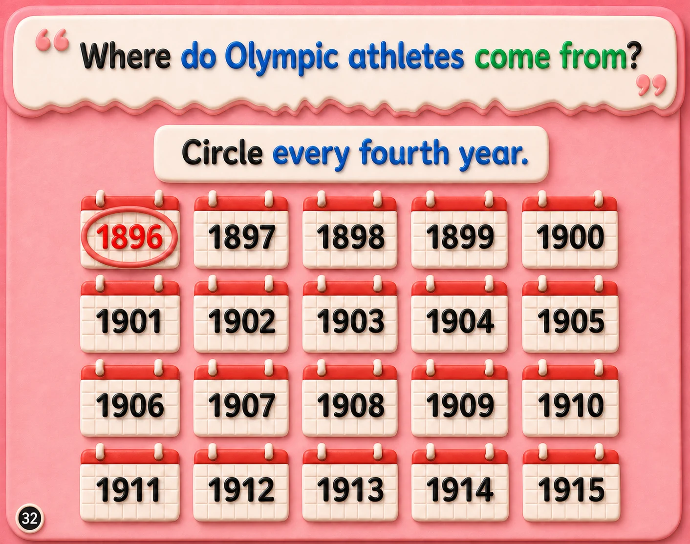

⬅️ Previous Page
📖 Page 3 of 6
Next Page ➡️
🏠 Week 4 Home
Week 4 — When are the Olympic Games?
🎵 Week Song
🃏 Flashcards

🔊
1896
1897
1898
1899
1900
1901
1902
1903
1904
1905
1906
1907
1908
1909
1910
1911
1912
1913
1914
1915
▶ Start Activity
×
↻ Try Again
Press Start Activity and listen.